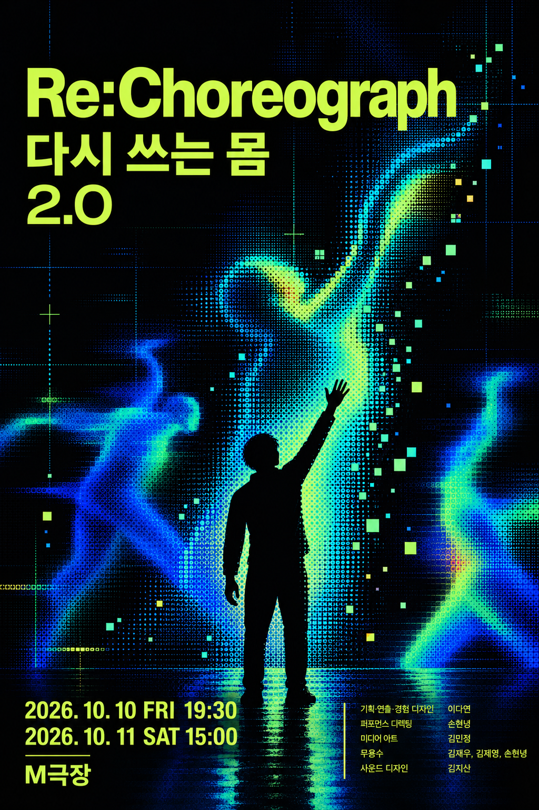

<Re:Choreograph 다시 쓰는 몸>
전시에 오신 것을 환영합니다.
각자의 다른 출발점으로부터 처음의 의미가 분해되어
새로운 의미를 만들어가는 순환을 느껴보세요.
이제, 감정의 문을 열어볼까요?
응답은 시 생성과 저장에 사용됩니다. 완성된 시와 별명은 몸의 시 전시 화면에 공개되며 QR과 결과 링크로도 볼 수 있습니다.

각자의 다른 출발점으로부터 처음의 의미가 분해되어
새로운 의미를 만들어가는 순환을 느껴보세요.
이제, 감정의 문을 열어볼까요?
응답은 시 생성과 저장에 사용됩니다. 완성된 시와 별명은 몸의 시 전시 화면에 공개되며 QR과 결과 링크로도 볼 수 있습니다.